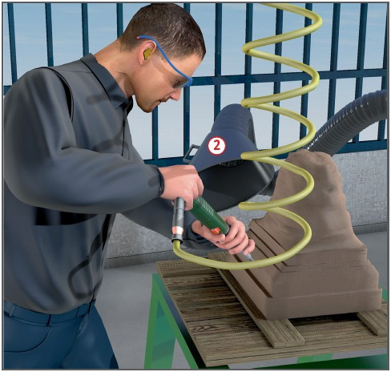
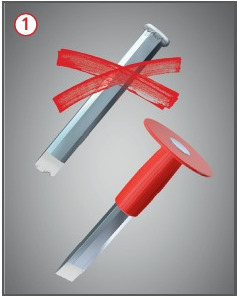
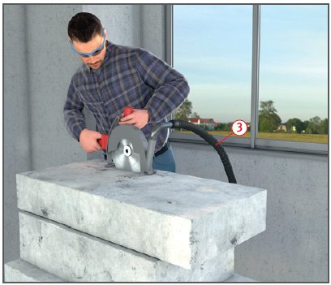
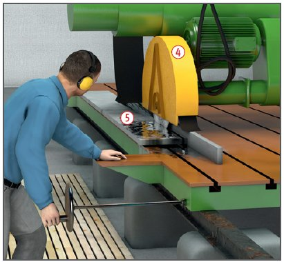

Gefährdungen
- Es besteht die Gefahr, von
Teilen getroffen zu werden.
- Durch quarzhaltige Stäube
und Lärm kann die Gesundheit
gefährdet werden.
Schutzmaßnahmen
Handwerkzeuge – Meißel 
- Handschutz und Schutzbrille
tragen.
- Meißel mit Fangkorb und
Handgriff verwenden.
- Grate am Meißelkopf müssen
entfernt werden (Splittergefahr).
- Keine stumpfen oder schadhaften
Meißel benutzen.
- Meißel beim Nachschleifen
nicht überhitzen.
Druckluftbetriebene Meißelhämmer
- Bei Druckluftwerkzeugen
können die Vibrationen zu Gelenkveränderungen
und zu Gefäßschäden an den Händen
führen (Weißfingerkrankheit),
deshalb nach Möglichkeit vibrationsgeminderte
Werkzeuge verwenden.
- Bewegliche Anschlussleitungen gegen mechanische
Beschädigungen schützen und
so verlegen, dass keine Stolpergefahr
entsteht.
- Schlauchverbindungen gegen unbeabsichtigtes Lösen sichern.
- Vor dem Trennen Schlauchverbindung drucklos machen.
- Beim Ablegen des Gerätes Meißel entfernen oder gegen unbeabsichtigten Ausstoß sichern.
- Gehörschutz verwenden.
- Schutzbrille tragen.
Steinbearbeitungsmaschinen
- Quetsch- und Scherstellen an
Maschinen absichern
 .
.
- Verkleidungen/Abdeckungen nicht entfernen.
- Art, Umfang und Fristen erforderlicher Prüfungen festlegen (Gefährdungsbeurteilung) und einhalten.
- Ergebnisse der Prüfungen dokumentieren.
- Lärmarme Maschinen, Geräte
und Werkzeuge auswählen, z. B. geräuscharme Sägeblätter verwenden.
- Lärmintensive Maschinen
kapseln und abschirmen.
- Lärmbereiche kennzeichnen
und durch bauliche Maßnahmen
von anderen Arbeitsplätzen
trennen.
- Gehörschutzmittel benutzen,
wenn die technischen Maßnahmen zur Lärmminderung
nicht ausreichen.
Nass betriebene Säge-, Fräs- und Schleifmaschinen
- Stationär elektrisch betriebene
Maschinen müssen mindestens
der Schutzart IP 54 entsprechen.
- Handmaschinen für Nassbetrieb
dürfen nur mit der Schutzmaßnahme
„Schutzkleinspannung“
oder „Schutztrennung“
betrieben werden.
- Feinstaub an der Entstehungsquelle
durch Wasserzuführung
binden und Sprüh- bzw. Schleifnebel
niederschlagen
 .
.


Zusätzliche Hinweise für
Arbeiten mit quarzhaltigen
Materialien
- Bei der Bearbeitung quarzhaltiger Materialien vor allem mit Maschinen zum Sägen, Fräsen, Schleifen, Polieren kann gesundheitsschädlicher Feinstaub auftreten.
- Für technische Belüftung sorgen und
Staub an der Entstehungsstelle
direkt an der Maschine oder
durch Absaugarm
 erfassen
und absaugen.
erfassen
und absaugen.
- Absaugarm regelmäßig der
Emissionsquelle nachführen und in Richtung der Absaugöffnung arbeiten.
- Trennschleifer direkt absaugen
 und nur dafür zugelassene
und gekennzeichnete Trennscheiben
verwenden.
und nur dafür zugelassene
und gekennzeichnete Trennscheiben
verwenden.
- Soweit lüftungstechnische
Maßnahmen nicht ausreichen,
oder eine Kombination von
Maßnahmen zur Einhaltung der
Grenzwerte nicht ausreicht,
Atemschutz mit Partikelfilter P2
bzw. filtrierende Halbmasken
FFP2 benutzen.
- Schutzbrille verwenden.
- Werkstück nicht abblasen oder
abkehren, sondern absaugen.
Grobe Stücke mit Rechen einsammeln.
- Für Reinigungsarbeiten nur
geprüfte Sauggeräte der Staubklasse
M oder höherwertig verwenden.
Arbeitsmedizinische
Vorsorge
- Arbeitsmedizinische Vorsorge
nach Ergebnis der Gefährdungsbeurteilung
veranlassen (Pflichtvorsorge)
oder anbieten (Angebotsvorsorge).
Hierzu Beratung
durch den Betriebsarzt.
07/2021